主题：Molecular Dynamics Simulation —— Introduction, Algorithms & Physics, Parallelization Techniques
Lecture 19 是 Week 10 "Extended Example: Molecular Dynamics" 的第一节，进入本周的扩展示例。整节课的脉络分三段：(1) Motivation —— 为什么 MD 是 HPC 问题（10²⁵ 个原子 × 10⁻¹⁴ 秒的时间分辨率，硬上不可行）；(2) Algorithms & Physics —— 用什么方程（Newton + Velocity-Verlet）、力从哪来（Stillinger-Weber 二体 + 三体势）、怎么把 O(N²) 砍到 O(N)（cutoff + neighbor list + periodic boundary），最后用 thermostat 控温；(3) Parallelization —— 哪些循环天然并行（pointwise update），哪些有 race condition（force reduction），各自怎么处理。Slide 1 标题页、slide 2 是 Week 9 Gaussian Processes 的回顾占位、slide 3–6 是 Quiz 9 / 课程 schedule / Code Server / 拉代码这种行政页，按惯例跳过；slide 7 / 13 / 30 是讲者自己分的三个章节标题页，被转写为下面的章节横幅；slide 27 / 29 / 34 是 "Exercise 2/3/4" 现场练习占位页，也跳过；slide 35 是预告下次课，放在最后。
讲者用一瓶矿泉水开场，目的不是讲水，而是抛出一个研究范式的问题：当我们想理解一个宏观行为（水为什么会流动？冰为什么会融化？某种材料为什么会断裂？）时，"放大到原子尺度，直接看每个原子怎么动" 就是一种合法的解释路径。
Slide 9 那个放大圈里画的就是水里其实是 ~10²⁵ 个 H₂O 分子在不停撞来撞去。课程里这一周要做的，就是把这套"直接模拟原子运动"的方法（Molecular Dynamics, MD）从头实现一遍。
"We will study the atoms directly!" 是这一段的核心口号——不解析地求解，不平均场近似，就是真的把每个原子的位置、速度、受力一个个算出来，让它一步步演化。
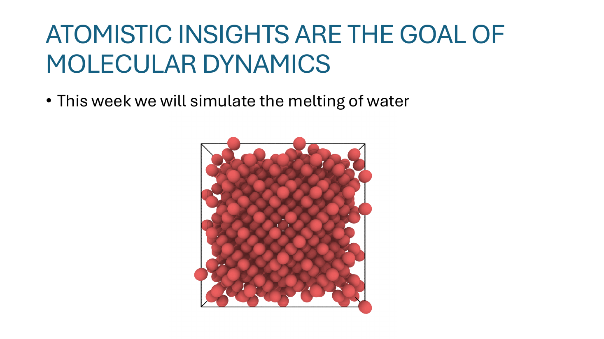
这页给出本周的具体题目：模拟冰（晶体水）融化成液态水的过程。图里那个红色小球阵列就是 ice 的初始构型——分子排成规则的晶格。整个 MD 的任务就是给这套体系一个温度，让它按物理规律演化，看晶格何时崩溃、变成液体。
"Atomistic insight" 这个词的意思是：我们不只想看"冰熔点是 0°C"这个宏观数字，而是想看到原子层面发生了什么——哪个键先断、分子怎么从有序变无序、温度起伏如何传播。这正是 MD 比纯实验或纯统计力学多出来的那一层。
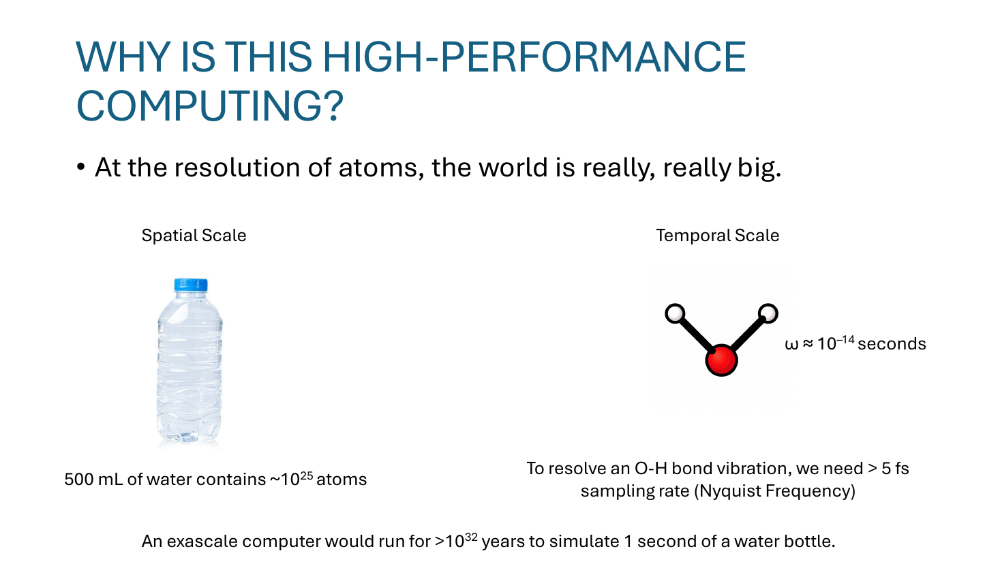
这页是整门课用来解释"为什么 MD 必须靠 HPC"的核心一页。左右两栏分别讲空间尺度和时间尺度，两个数字都吓人。
500 mL 的水大约有 10²⁵ 个原子。即使每个原子只存 (位置 x,y,z + 速度 vx,vy,vz) 共 6 个 double，光内存就要 10²⁵ × 48 字节 = 4.8 × 10²⁶ 字节，是任何机器都装不下的。所以"模拟一整瓶水"在原子层面是物理上不可能的——必须只模拟很小的一块（比如一万个分子的 ice cube）。
右边那个 H₂O 分子里，O–H 键的振动周期 ω ≈ 10⁻¹⁴ s（10 飞秒级）。要数值地"看清"这个振动，根据 Nyquist 采样定理（采样率必须至少是信号频率的 2 倍），时间步长 Δt 只能取到 ~5 fs 上下。换句话说，模拟 1 秒的真实物理时间，需要 ~2 × 10¹⁴ 步迭代。
把空间和时间一乘：要在 exascale（10¹⁸ FLOP/s）机器上模拟"1 秒钟一瓶水"，估算下来要跑 >10³² 年——比宇宙年龄还多 22 个数量级。这不是优化能解决的，是物理上必须做近似。
所以 HPC 在 MD 里要做两件事：(1) 算法层面砍复杂度（cutoff、neighbor list 等，后面会讲）；(2) 实现层面榨硬件（共享内存、MPI、GPU，第三部分讲）。
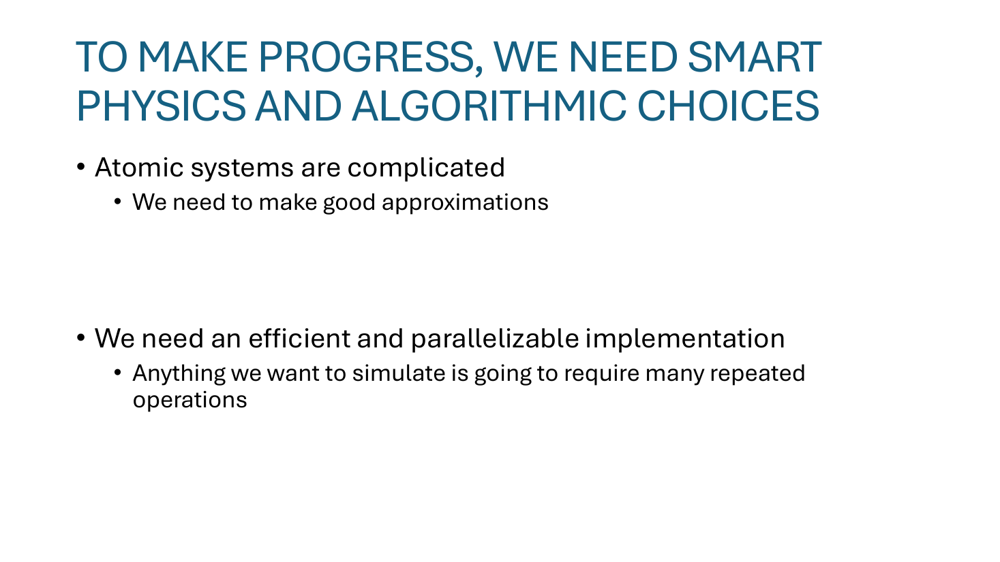
这页只是把后面几节的脉络铺开：
(1) Atomic systems are complicated → 需要好的近似。 严格的量子化学（解 Schrödinger 方程）是 O(N!) 量级的，对几百个原子都很吃力。MD 选择把原子当成经典点粒子，用经验势函数（Stillinger-Weber 等）替代电子结构计算——精度换速度。Slide 14 之后会展开。
(2) 重复操作多 → 必须并行。 哪怕每步算得再快，时间步要走 10⁹ ~ 10¹² 步，每步又要遍历 10⁴ ~ 10⁹ 个原子。这是个嵌套大循环，天然适合并行。第三部分会讨论哪些循环并行起来 trivial（pointwise）、哪些有 race condition（force/energy reduction）。
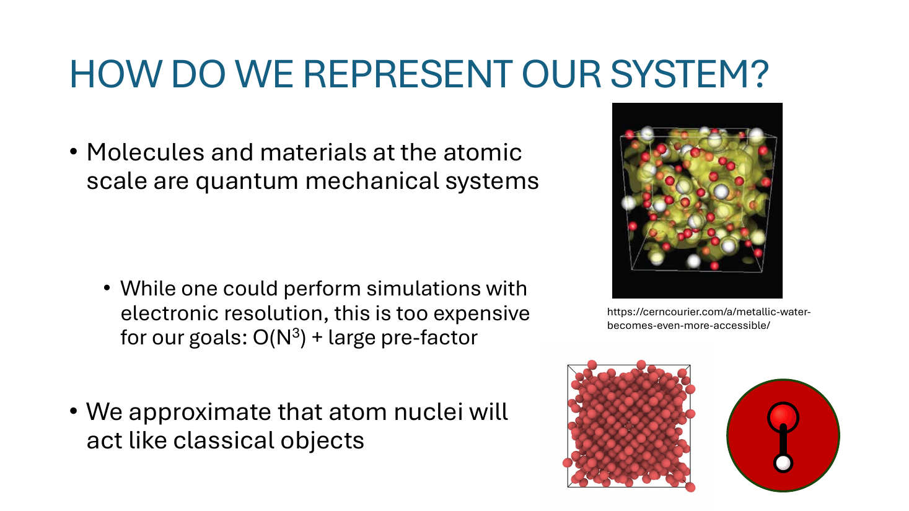
这页定义了 MD 最根本的一刀切近似：把原子核当成经典刚体小球。三个 bullet 一个一个看：
"Molecules and materials at the atomic scale are quantum mechanical systems." 严格讲，原子里电子和原子核都受 Schrödinger 方程支配，有波函数、有概率云。但电子结构计算（DFT、Hartree-Fock 等）每步都极贵。
"While one could perform simulations with electronic resolution, this is too expensive for our goals: O(N³) + large pre-factor." 即使最便宜的 DFT，标度大约是 O(N³) 且常数极大——做几百个原子的小体系还行，做上百万个原子就不可能。
"We approximate that atom nuclei will act like classical objects." MD 的核心妥协：忽略量子效应，只保留原子核的位置和速度。每个原子是一个 (mass, position, velocity) 的三元组，相互作用用一个手工拟合的经验势函数来代替真实电子结构（slide 17–22）。
右侧三个图依次表达了这层抽象：上面是真实金属里电子云的复杂结构（量子图景），中间是把原子离散成红球阵列（经典近似），右下角是把单个 H₂O 分子简化成"一个绿球带一个红球"的粗粒化表示。后面用的就是这种粗粒化模型。
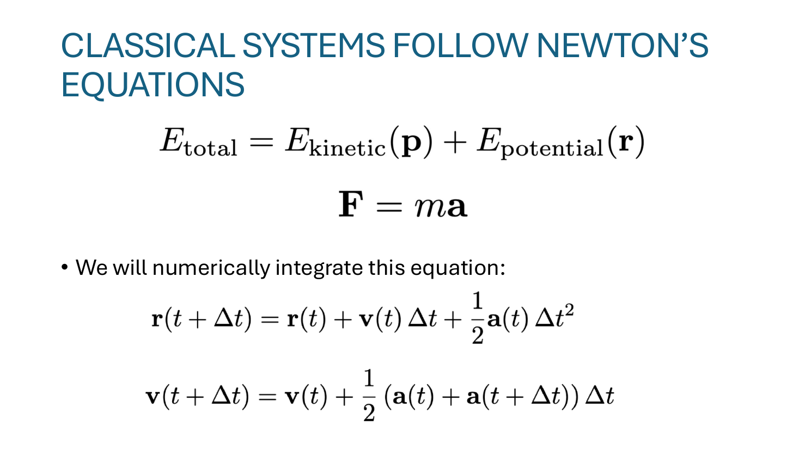
E_total = E_kinetic(p) + E_potential(r) —— 系统总能量分成两块：动能（依赖动量 p，也就是质量×速度）和势能（依赖位置 r）。MD 演化过程中希望总能量守恒，这是检验积分器对不对的金标准。
F = ma —— 牛顿第二定律。原子受到的力 F 决定加速度 a，进而决定速度和位置如何变。势能和力的关系是 F = −∇E_potential（力是势能梯度的负方向，slide 17 会用到）。
r(t+Δt) = r(t) + v(t)Δt + ½ a(t) Δt² 和 v(t+Δt) = v(t) + ½ (a(t) + a(t+Δt)) Δt —— 这是 Velocity-Verlet 的解析形式，对位置用了二阶 Taylor 展开（带加速度修正项），对速度用了梯形法（取两端加速度的平均）。
为什么不用更熟悉的 Euler 法 r ← r + v·Δt？因为 Euler 法是一阶精度，能量会随步数线性漂移；而 Velocity-Verlet 是二阶精度且辛积分（symplectic，在长时间下能量震荡但不漂移）——这正是 MD 想要的性质。下一页会写出它的算法形式。
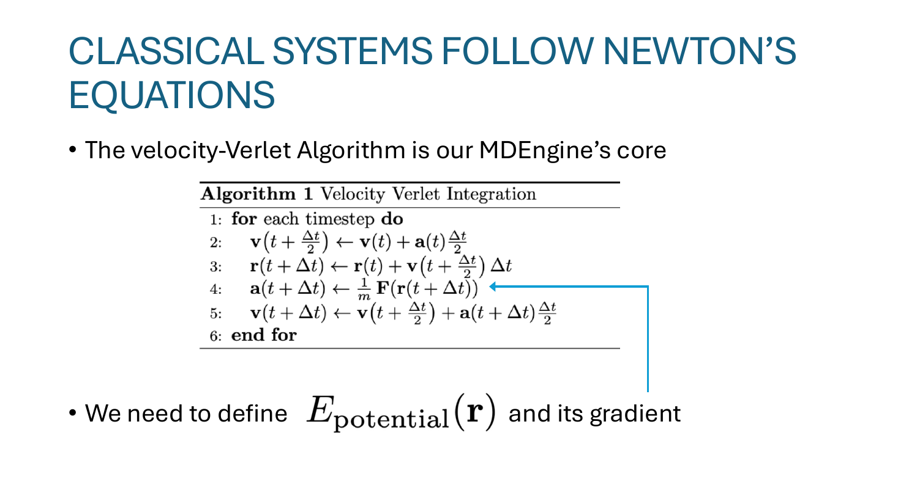
Slide 15 给的是连续公式，slide 16 给的是实现版——每个时间步 4 行操作，循环执行。逐行读：
Line 2 ：v(t + Δt/2) ← v(t) + a(t)·Δt/2 —— "半步速度更新"。先用当前加速度把速度推半步。注意推的是 Δt/2，不是 Δt。
Line 3 ：r(t + Δt) ← r(t) + v(t + Δt/2)·Δt —— 用刚才那个"半步速度"把位置推整步。这一步走完，每个原子都搬到了新位置。
Line 4 ：a(t + Δt) ← (1/m) F(r(t + Δt)) —— 这是整个 MD 引擎里最贵的一步。要根据新位置重新算每对（甚至每三个）原子之间的力，再除以质量得到新加速度。Slide 上画的那个箭头从 line 4 指出去，正是因为下面那行 "We need to define E_potential(r) and its gradient" 是这一步的前置条件——没有 E_potential 就算不出 F，没有 F 就出不了 a。后续 slide 17–22 整段都是在定义 E_potential。
Line 5 ：v(t + Δt) ← v(t + Δt/2) + a(t + Δt)·Δt/2 —— 用"新加速度"再把速度推后半步。这就是为什么叫 "velocity-Verlet"——速度被分两半更新，把旧加速度和新加速度各承担一半。
整个循环里，对单个原子来说每步只要 4 次浮点操作；真正昂贵的是 line 4 那个 F(r) 计算——它是 O(N²) 的（每对原子都要算），后面 slide 23–25 就是讲怎么把它降到 O(N)。
讲者用四张连续 slide 把 Stillinger-Weber 二体势（pair potential）的形状一段段建出来。每张 slide 左边那个柱子是 "在距离 r 处，势能 φ₂(r) 的值（高度）"；右边是相应距离下两个原子的受力情况。把它们拼起来就是经典的 LJ-like 双井势曲线。
Slide 17 ：r = r₀（平衡距离） —— 势能在最低点 → 梯度 −∇E = 0 → 没有力。这是两个原子最"舒服"的距离，物理上对应化学键的键长。
Slide 18 ：r > r₀（稍微拉远） —— 势能上升（曲线右边在涨，柱子变成蓝色），梯度方向指向更远，所以 −∇E 指向更近 → 出现吸引力 F_i, F_j 互相指向对方，把它们拉回 r₀。物理直觉：化学键的"弹性回复力"。
Slide 19 ：r < r₀（挤得太近） —— 势能急剧上升（红色柱子拔高），梯度方向指向更近，所以 −∇E 指向更远 → 出现强排斥力把两个原子推开。物理上对应电子云重叠产生的 Pauli 排斥，曲线在 r → 0 时几乎是垂直墙。
Slide 20 ：r ≫ r₀（拉得很远） —— 势能渐近趋向 0（绿色柱子很矮），梯度也接近 0 → 几乎没有力。这是后面"截断 cutoff"成立的物理基础（slide 23）：远处的对子可以忽略。
把四个采样点连起来，就是一条左侧陡升 → 中间凹陷 → 右侧缓慢趋零的曲线。Slide 21 会把这个形状写成具体公式。
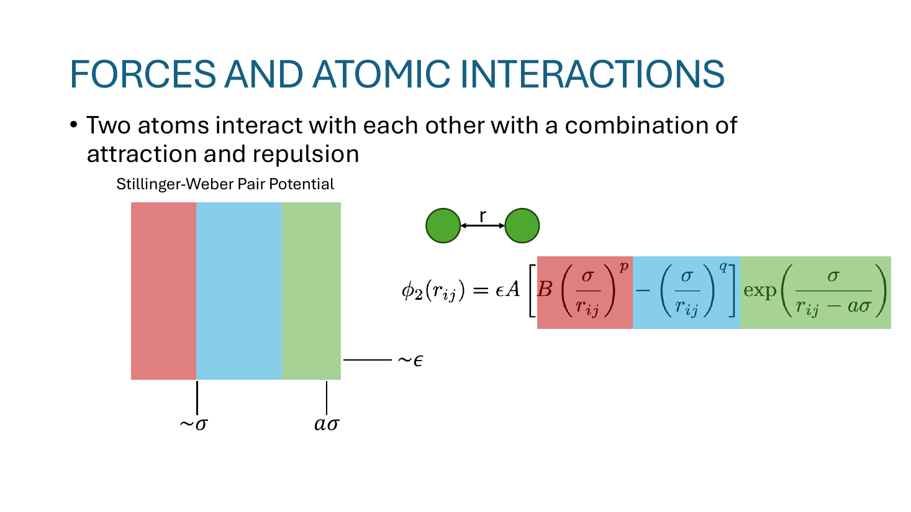
公式：
讲者把它涂成三色，每一色对应曲线的一段：
红色 B(σ/r)p（排斥项） —— 当 r 很小，σ/r 很大，这一项被高次幂放大，主导排斥行为，对应 slide 19 那根红柱子。
蓝色 −(σ/r)q（吸引项） —— 负号表示降低势能，幂次比 p 小，所以中等距离时它把势能拉到最低（井底），对应 slide 17 的平衡点。
绿色 exp(σ/(r − aσ))（cutoff 因子） —— 这是 SW 势比经典 Lennard-Jones 多出来的一项。当 r 趋近 aσ 时分母趋零、指数爆负无穷，整个 φ₂ 被乘成 0；当 r > aσ 时干脆定义为 0。所以 aσ 就是解析的硬截断：超过这个距离的对子贡献严格为 0，可以跳过计算。这正好对应 slide 20 的"远处力衰减为零"。
左下那张色条图把这三段画成空间叠加：σ 是距离尺度（井宽），ε 是能量尺度（井深），aσ 是截断半径。这三个参数就是 SW 势的核心拟合参数，针对不同物质（硅、水）会有不同取值。
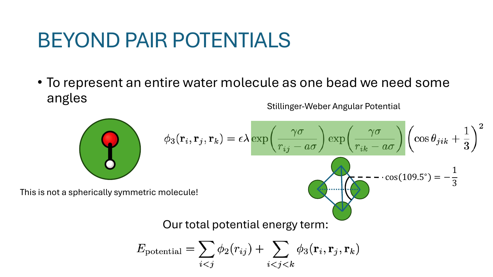
左下角的图：把整个 H₂O 分子粗粒化成"一个绿球（O）带一个小红球（H）"的非对称单元。"This is not a spherically symmetric molecule!" ——水分子的方向性意味着它喜欢摆出特定的角度（液态水 109.5° 的四面体结构、ice 的氢键网络），仅靠"两两距离"无法描述这种偏好。
逐块看：
所以 SW 三体势的物理意思是："如果三个原子摆得不像四面体，我就罚你能量"，从而在数值上重现水/硅的真实结构。
枚举所有原子对（i<j 避免重复）和所有原子三元组（i<j<k）。注意三体项的复杂度天然是 O(N³)，比二体的 O(N²) 还差——后面 slide 23–25 的 cutoff/neighbor list 优化对它尤其重要。
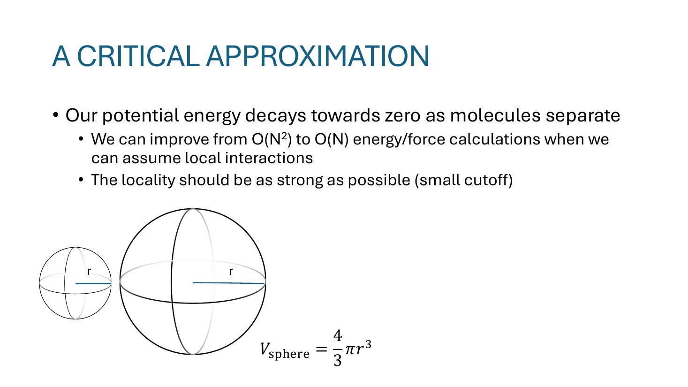
"Our potential energy decays towards zero as molecules separate" —— 既然 slide 20–21 已经告诉我们远处贡献是 0，那对每个原子 i，只要枚举它近处的邻居，不需要遍历所有 N 个原子。
原本对每个 i 要算 N−1 个对子，总共 O(N²)。引入 cutoff 半径 r_c 后，每个原子的邻居数量 k 是常数（只跟密度和 r_c 有关，跟系统总大小 N 无关），所以总开销变成 O(N·k) = O(N)。这是 MD 能 scale 到百万原子级的关键。
讲者强调 cutoff 越小越好。底部那两个球的对比是想直观地讲：球体积 V = (4/3)π r³，邻居数量正比于 r³。把 r_c 加倍，每个原子需要遍历的邻居数会变成 8 倍。
所以 r_c 是个 trade-off：
实际工程里，r_c 通常取 SW 势那个 aσ 解析截断（势能严格为 0，没有任何精度损失）。
有了 cutoff 后，真正算势能的对子变少了。但要判断"j 是不是 i 的邻居"，朴素做法还是要算一次距离 ‖r_i − r_j‖——所以每步还是有 O(N²) 次距离检查。Neighbor list 就是为了把这部分也降下去。
三张连续构型截图（time = 0 → 100 fs → 200 fs）几乎看不出区别。原因：每步 Δt = 5 fs，每个原子最多挪 v·Δt ≈ 0.05 Å，远小于原子间距。所以"原子 i 的邻居集合"在很多步内基本不变，可以缓存复用。
引入两个半径：
每隔若干步（比如 100 步）做一次大遍历：对每个原子 i 找出 r_l 范围内所有邻居，存进 neighbor list（右边那张表，原子 1: [2, 3, 5, 37, 42, ...]）。中间这若干步内，力计算只在这张表里查，不再做全局距离检查。
为什么 r_l 要比 r_c 大？因为这若干步内原子会漂移一点点，可能本来在 r_c 外的原子飘进 r_c 内。多出来的安全边界 r_l − r_c 就是"漂移预算"。当某个原子漂移超过 (r_l − r_c)/2 时，就需要重建 neighbor list。
"We now have fewer atoms to check each timestep!" —— 距离检查从 O(N²) 降到 O(N · k_l)（k_l 是 r_l 内的平均邻居数，常数），重建开销摊到 100 步上几乎可以忽略。
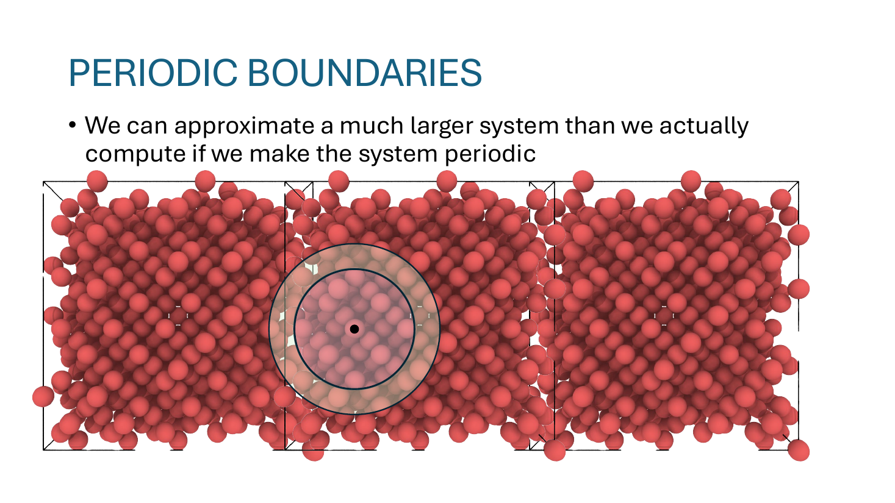
之前讲 cutoff 时假设每个原子四周都有邻居。但真实模拟盒子是有限大的，盒子边缘的原子一侧没邻居，受力不平衡，会飘出去——这就是表面效应。物理上，我们想模拟的是 bulk water/ice，不想要表面效应。
图上把同一个盒子在 x 方向左右各拷贝一份（实际三维要 26 份邻居），让边缘原子在外面也"看到"邻居。但实际只存中间那个盒子——计算邻居距离时，如果发现 j 在盒子外面，就把它映射回盒内的镜像（minimum image convention）：取所有镜像里距离最小的那个。
这样在内存上只多花 O(1) 的开销（一份盒子大小、几个边长参数），却把"小盒子"伪装成了"无限大体系"，消掉了所有人工边界效应。MD 教材里这是几乎所有体相模拟的标配技巧。
用 minimum image 时，cutoff r_c 必须 < L/2（L 是盒子边长），否则一个原子会同时跟另一个原子本体和镜像都发生作用，物理上自相矛盾。也就是说盒子至少要比 2·r_c 大——这是 MD 体系最小尺寸的下限。
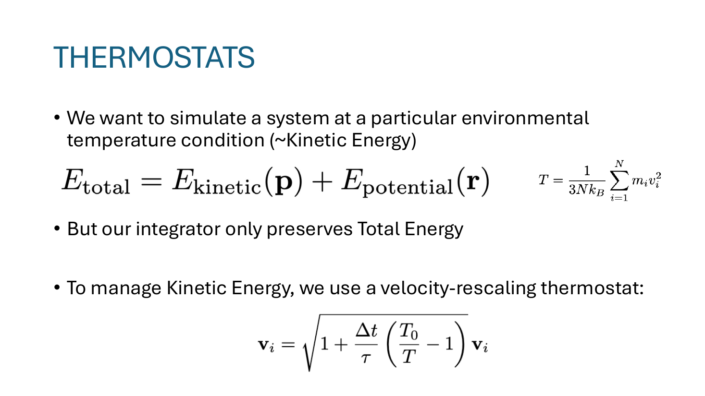
第一行公式 E_total = E_kinetic(p) + E_potential(r) 守恒，说明 NVE 系综（粒子数 N、体积 V、能量 E 都守恒）。但实验里我们一般想模拟恒温条件（NVT，比如把系统放在 298 K 的浴池里），不是恒能。
右边那个公式 T = (1/3Nk_B) Σ m_i v_i² 给出温度的定义：温度等于动能的统计度量（每个自由度 ½k_B·T，3N 个自由度）。所以"恒温"等价于"动能保持在某个目标值附近"。
每步在 Velocity-Verlet 之外，额外对每个速度乘一个标量因子。直觉很简单：如果当前温度 T 比目标 T₀ 低（T₀/T > 1），系数 > 1，把速度放大，注入动能；反之则缩小，抽走动能。
τ 是响应时间常数——τ 大表示慢慢调，τ 小表示一步到位。τ → ∞ 时退化为 NVE（不调温）；τ = Δt 时每步直接把 T 重置成 T₀（很 aggressive，会扰动动力学）。实践中 τ 取 10·Δt ~ 100·Δt 之间。
这是最简单的 thermostat（叫 Berendsen 类）。更严格的 Nose-Hoover、Langevin 等会在统计意义上更正确，但 SW 势 + 这种简单 rescaling 已经能让 ice 系统融化到目标温度，这门课用它就够了。
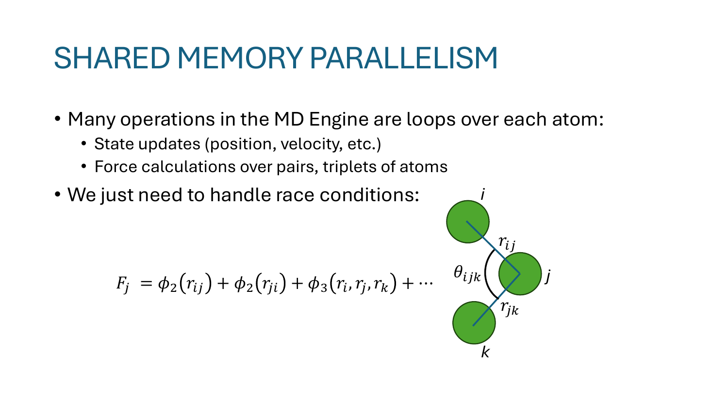
整个 MD 主循环里，每步要做的事情几乎都是对每个原子做一遍：
这种"独立处理每个元素"的循环天然可以 OpenMP #pragma omp parallel for，每个线程认领一段原子，无需同步。这是第二节（slide 32）要讲的"trivially parallel"的部分。
右边那个公式 F_j = φ₂(r_ij) + φ₂(r_ji) + φ₃(r_i, r_j, r_k) + ... 是关键：原子 j 的总受力，要把它参与的每对、每三元组的贡献加起来。换句话说：
右边的三原子图 (i, j, k) 就是在画这种共享：j 同时是 (i, j) 对子的成员、也是 (j, k) 对子的成员、还是 (i, j, k) 三元组的成员，多个并行任务会争抢 F[j]。
解决方案有几种：原子操作（#pragma omp atomic，简单但慢）、线程私有累加器后归并（per-thread buffer + reduction，快但耗内存）、按"原子owner"分块（每个原子只由一个线程负责写它的力）。这是第三节（slide 33）要讲的 reduction 模式。
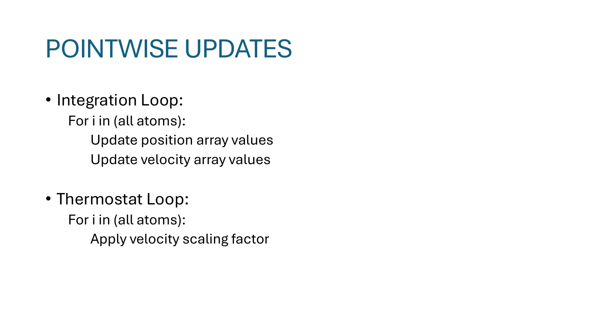
Slide 列了两个例子：
Integration Loop
for i in (all atoms):
Update position array values
Update velocity array values对应 Velocity-Verlet 的 line 2、line 3、line 5——每个原子根据它自己的 v、a、r 算出新的 v、r，不读其他原子的数据。所以 N 个原子完全独立，开 N 个线程同时算也没冲突。
Thermostat Loop
for i in (all atoms):
Apply velocity scaling factor对应 slide 28 的 v_i ← α·v_i。这个 α 是个全局标量（用整体 T 算出来的），每个线程读这个标量、改自己的 v_i，仍然零冲突。
OpenMP 里就一行：
#pragma omp parallel for
for (int i = 0; i < N; ++i) {
pos[i] += vel[i] * dt + 0.5 * acc[i] * dt * dt;
vel[i] += 0.5 * acc[i] * dt;
}没有锁、没有 reduction、没有 ordering 要求。能拿到的加速比基本就是线性到核数。这种"embarrassingly parallel"的部分是 MD 中最舒服的一段。
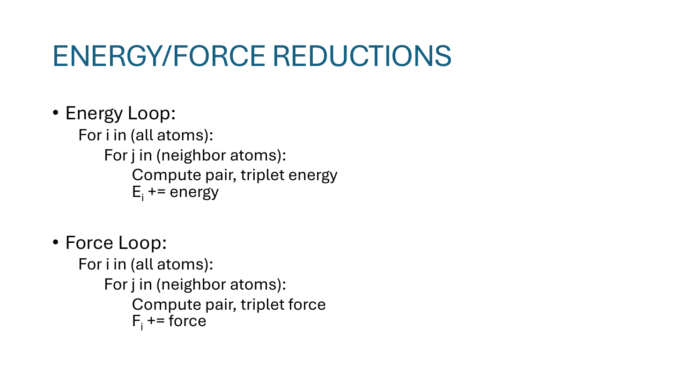
两个例子结构相同——外层遍历每个原子，内层遍历它的邻居：
Energy Loop
for i in (all atoms):
for j in (neighbor atoms):
Compute pair, triplet energy
E_i += energyForce Loop
for i in (all atoms):
for j in (neighbor atoms):
Compute pair, triplet force
F_i += force外层的 i 看似独立，但内层在累加 F_i / E_i——多个线程如果各自循环不同的 i，并不会冲突；但如果按 (i, j) 对子分配工作（比如把所有对子分给线程），多个线程会同时往同一个 F_i 写，就回到 slide 31 的 race condition。
典型实现技巧：
reduction(+:...) 子句：让编译器帮做上面那套累加器逻辑——但要求归并的是标量或定长数组，对动态结构（neighbor list）需要手写。这类 loop 是 MD 性能的瓶颈：内层每次迭代要做距离平方根、指数、power 等昂贵浮点操作，又要小心同步。后面的课会讲 MPI 把它分到多节点、CUDA 把它丢给 GPU 上的几千个 thread，是真正"高性能"那一节的核心战场。
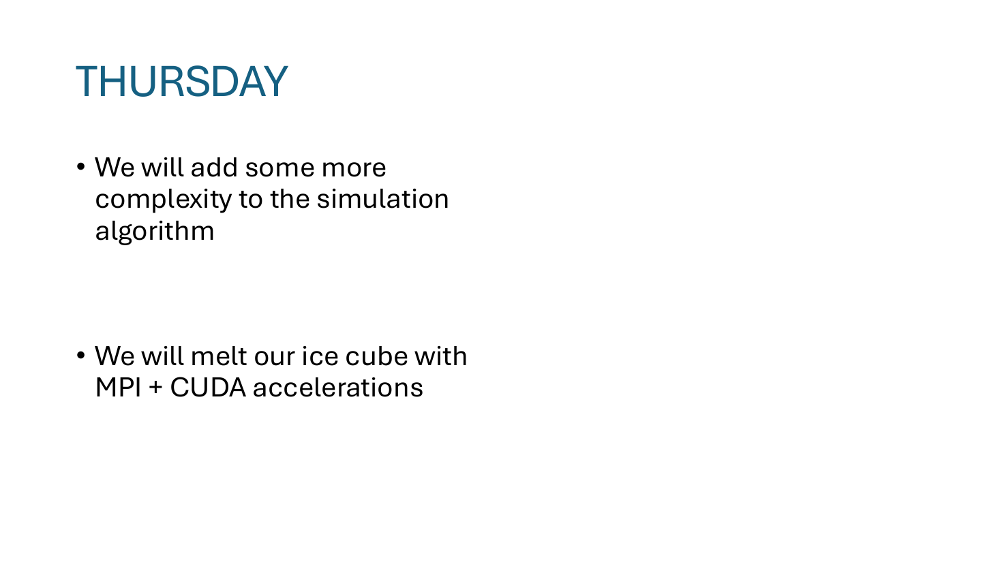
周四（下一次 Lecture 20）会把今天的 Velocity-Verlet + SW 势 + neighbor list + thermostat 的"串行实现"再加一层复杂度，并真正用 MPI + CUDA 来加速：MPI 把盒子按空间切分到多节点（domain decomposition），CUDA 把每个原子的力计算丢到 GPU 上数千个线程并行——把"~1 分钟跑不到几步"的限制打破，看 ice cube 真的融化。